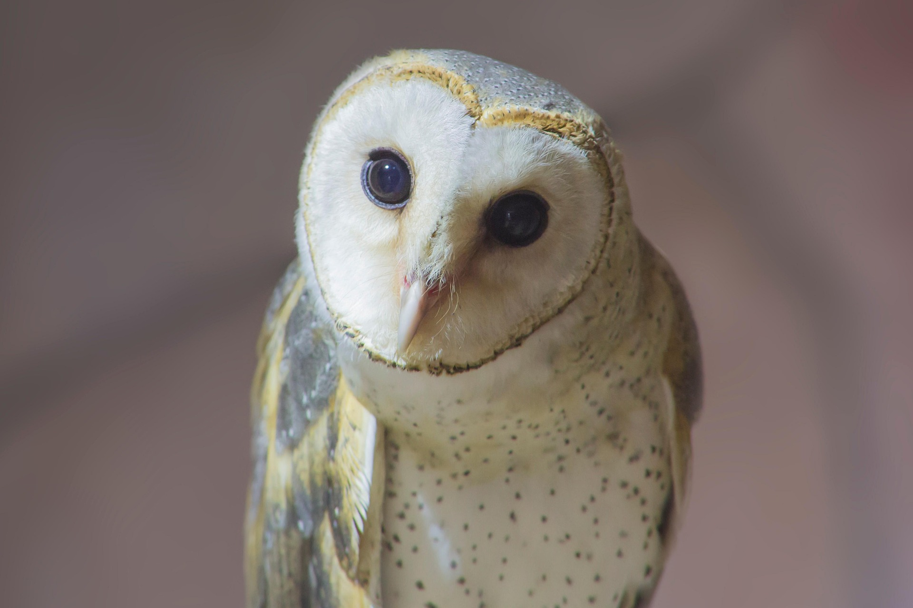

Raptors face significant challenges in the modern world. Habitat destruction remains the leading cause of population decline, as urban sprawl reduces the open spaces required for hunting and nesting.
Additionally, climate change is shifting the migration patterns of many species, forcing them to find new territories where food sources may be scarce. Protecting these "apex predators" is vital for maintaining a balanced ecosystem.
If you want to get involved in protecting these amazing birds, please visit the Peregrine Fund Official Site for more information.